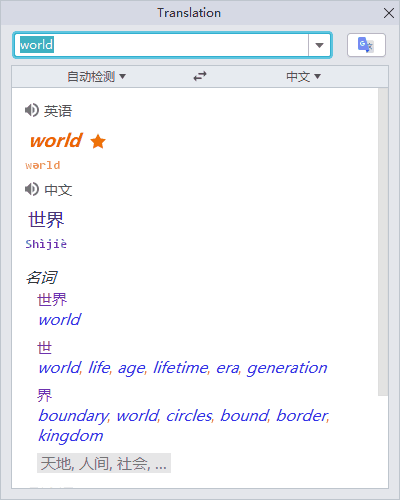
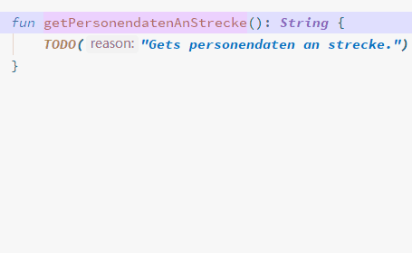
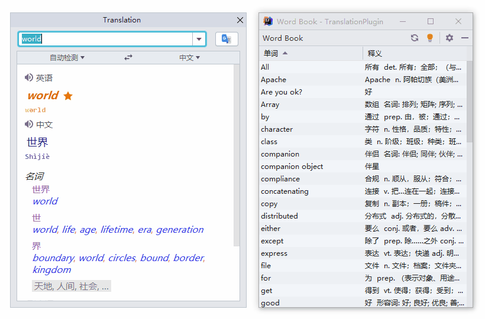

버전 2.8(2020-03-23)
Translation v2.8을 사용해주셔서 감사합니다. 해당 버전에는 다음과 같은 주요 업데이트가 포함되어 있습니다:
- 맞춤법 검사 - Google 번역에 새로운 맞춤법 검사 기능 추가
- 번역 및 바꾸기에 단어 분할 지원 - 번역 및 바꾸기에 자동으로 단어 분할 지원
- 단어장 자동 초점 - 새 단어를 추가할 때 단어장이 자동으로 새로운 단어에 초점을 맞춤
이곳에서 해당 릴리스 노트를 확인하실 수 있습니다.
번역
맞춤법 검사
Google을 사용하면 번역된 텍스트의 맞춤법을 검사하고 수정합니다.
번역 및 바꾸기
이제 번역 및 바꾸기 작업에 자동으로 단어를 분할하는 기능을 지원합니다.
단어장
새 단어에 자동으로 초점 맞춤
단어가 단어장에 추가되면 새로 추가된 단어에 대해 단어장의 단어 목록에서 자동으로 초점이 맞춰집니다.
